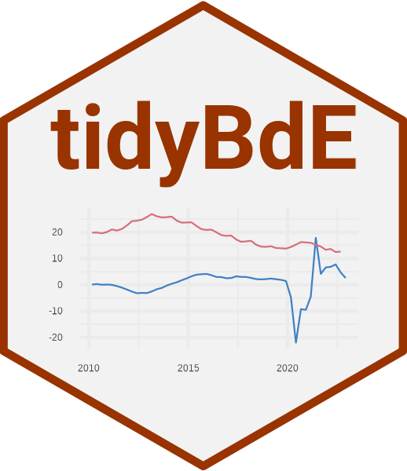

Tools to download data series from 'Banco de España' ('BdE') on 'tibble' format. 'Banco de España' is the national central bank and, within the framework of the Single Supervisory Mechanism ('SSM'), the supervisor of the Spanish banking system along with the European Central Bank. This package is in no way sponsored endorsed or administered by 'Banco de España'.
See also
Useful links:
Author
Maintainer: Diego H. Herrero dev.dieghernan@gmail.com (ORCID) [copyright holder]
Other contributors:
Banco de España (for the data.) [copyright holder]
Site built with pkgdown 1.6.1.
Template by Bootstrapious . Ported to pkgdown by dieghernan.